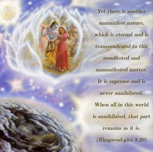
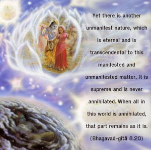
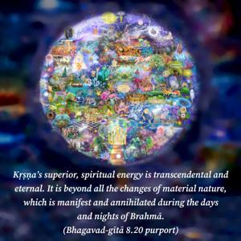

Yet there is another unmanifest nature, which is eternal and is transcendental to this manifested and unmanifested matter. It is supreme and is never annihilated. When all in this world is annihilated, that part remains as it is.



Kṛṣṇa’s superior, spiritual energy is transcendental and eternal. It is beyond all the changes of material nature, which is manifest and annihilated during the days and nights of Brahmā. Kṛṣṇa’s superior energy is completely opposite in quality to material nature. Superior and inferior nature are explained in the Seventh Chapter.